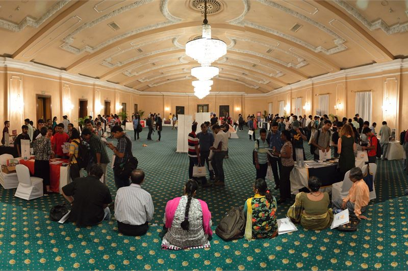
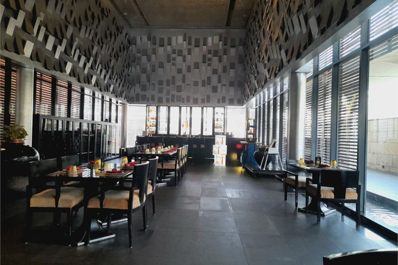
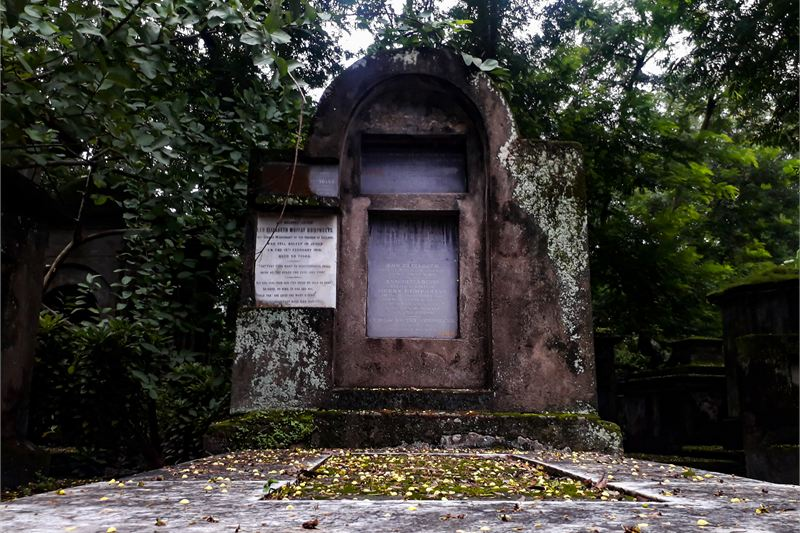

How these hotels were researched
▼- Rates: compared across more than one booking platform on the same day, quoted as a range with the month checked. Not a quote, and they move.
- Guest reviews in bulk: looking for complaints that repeat across many months, not single bad nights.
- Location: checked against a map, measured to the thing you actually came for.
- Real cost of entry: taxes, compulsory meal plans, transfers, and what is not included in the headline rate.
- What I could not confirm is said plainly in the text rather than filled in.
Kolkata is a city defined by neighborhoods that operate at entirely different paces. Central Chowringhee and Park Street showcase 19th-century colonial structures, yellow taxis, and tram tracks. Twenty kilometres east lies New Town Rajarhat, featuring wide expressways and glass business towers.
Picking where to stay dictates your daily experience. Booking a hotel in New Town when you want to walk to Indian Museum or browse books along College Street means spending two hours daily stuck in traffic along EM Bypass.
Rates listed below were checked in July 2026 across major booking engines, reflecting off-peak summer prices and peak winter figures.
The Oberoi Grand

Known affectionately as "The Grand Dame of Chowringhee", this property originated in the 1880s as a boarding house before Arathoon Stephen expanded it into a grand hotel. Mohan Singh Oberoi acquired it in 1938, launching the modern Oberoi group.
Step through the pillared entrance off bustling Jawaharlal Nehru Road and the city noise vanishes completely into a quadrangle courtyard with a central swimming pool and palm trees. Colonial high ceilings, teak furniture, and polished marble floors characterize the interior spaces.
Indicative rates start around Rs 11,500 in summer monsoon months and reach Rs 26,000 during winter peak. The unbeatable advantage is walking access. You are steps from Esplanade Metro, New Market hawker arcades, and a short walk from Maidan parklands.
I could not confirm whether Chowringhee heritage wing facade maintenance will be fully completed before Durga Puja festivities in October.
| Indicative rate | Rs 11,500 to Rs 26,000 per night |
|---|---|
| Rates checked | July 2026 |
| Location | Chowringhee, Esplanade Metro (2-minute walk) |
| Best for | Walking access to historic central Kolkata, museum, and markets |
In its favour
- Quiet inner courtyard pool sanctuary right off bustling market streets
- Superb central location adjacent to Esplanade Metro station
Worth knowing first
- Crowded sidewalk hawkers and traffic immediately outside front gates
- Standard entry rooms are cozy rather than massive
- Chowringhee is loud from early morning and the older windows do little to stop it
ITC Royal Bengal

Soaring 30 stories above the EM Bypass corridor, ITC Royal Bengal is a massive modern luxury property designed as a tribute to Bengal's aristocratic aristocratic palaces. It stands adjacent to sister property ITC Sonar.
Rooms feature grand proportions, marble baths, and view across East Kolkata wetlands. The hotel houses Royal Vega for classical vegetarian cuisine and Darjeeling Lounge for regional tea tasting.
Rates run from Rs 10,200 to Rs 24,000 per night. While convenient for science city events and airport highway transit, reaching Park Street or Victoria Memorial takes thirty minutes by car.
| Indicative rate | Rs 10,200 to Rs 24,000 per night |
|---|---|
| Rates checked | July 2026 |
| Location | EM Bypass, near Science City |
| Best for | Spacious modern luxury rooms and expansive dining choices |
In its favour
- Exceptionally large guest rooms with modern high-tech controls
- Multiple fine-dining options on site
- Much quicker to the airport than anywhere in the centre, which matters for an early flight
Worth knowing first
- Located along busy expressway away from central heritage walking zones
- EM Bypass traffic jams during morning and evening rush hours
Park Street and South Kolkata Stays

This is the area to skip: New Town Rajarhat high-rises for sightseers. Staying in distant Rajarhat software parks because hotel rates look Rs 2,000 cheaper will ruin a Kolkata trip. You will spend half your waking hours stuck behind trucks on the airport flyover.
Instead, staying near Park Street gives walking access to iconic eateries like Flurys, Mocambo, and Peter Cat. Mid-range boutique hotels along Park Street and Camac Street offer clean rooms from Rs 4,200 to Rs 9,500.
You can walk to South Park Street Cemetery, browse heritage bookshops, and catch the Metro at Park Street station to explore North Kolkata's aristocratic Rajbari mansions.
| Indicative rate | Rs 4,200 to Rs 9,500 per night |
|---|---|
| Rates checked | July 2026 |
| Location | Park Street / Camac Street hub |
| Best for | Dining, nightlife, and central metro connectivity |
What it costs to actually get there
Kolkata's yellow Ambassador taxis are iconic but often refuse to use their meters when departing from Howrah Junction or Sealdah railway stations. A prepaid taxi from Howrah to Park Street costs approximately Rs 250, but negotiating directly with drivers on the street can push the fare to Rs 500 for the same distance.
From Netaji Subhas Chandra Bose International Airport (CCU), the most reliable transport is the state-backed Yatri Sathi app or the prepaid taxi booth. A ride to central Chowringhee costs roughly Rs 450 to Rs 600. Avoid the aggressive private taxi touts operating inside the arrivals terminal who charge flat rates upward of Rs 1,500.
When to go, and what changes
Kolkata's peak season aligns perfectly with its mild, pleasant winter from December to February. Evening walks around Victoria Memorial are comfortable, and heritage properties charge their highest rates. Conversely, April and May bring intense, draining humidity that makes daytime walking tours nearly impossible, leading to steep hotel discounts.
During the Durga Puja festival (usually October), the entire city transforms into a massive public art gallery. Millions of people walk the streets all night visiting pandals. If you visit during this week, room rates double, traffic comes to a standstill, and you will navigate the city almost entirely on foot or by Metro.
Choosing your Kolkata location
If you love grand colonial history, walking to traditional markets, and historic hotel courtyards, book The Oberoi Grand. If you need spacious modern rooms and proximity to airport expressways, select ITC Royal Bengal. For food enthusiasts and casual exploring, Park Street remains unbeatable.
Interested in comparing India's classic port city hotels? Read our Mumbai harbour hotels guide or explore Bengal hill country in our Darjeeling tea estate bungalow review.
Practical Kolkata travel notes
- Kolkata Metro is clean, fast, and inexpensive. The North-South line connects Dum Dum to Kavi Subhash, linking major sights from Kalighat to Sovabazar.
- Netaji Subhash Chandra Bose International Airport (CCU) in Dum Dum is located roughly 16 km north of Park Street, taking 45 minutes by taxi via EM Bypass.
- Durga Puja (typically September or October) transforms Kolkata into an open-air art gallery. Hotel rates surge and streets close for pandal walks. Book 5 months ahead.
- Taxis operate as yellow metered cabs and app cabs (Uber, Yatri Sathi). Yatri Sathi app operated by Bengal government offers fair government-metered rates without surge multipliers.